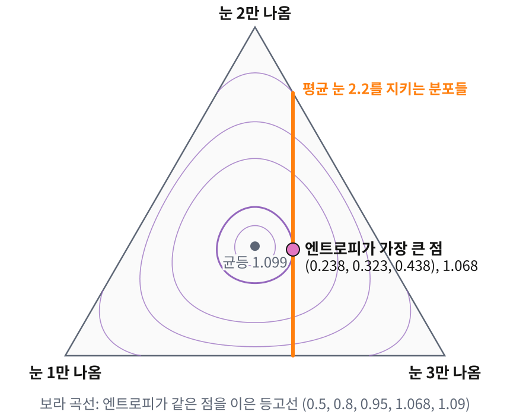

라그랑주 승수: 세지 않고 최대 엔트로피 분포 찾기
원리는 적었지만, 평균을 지키는 분포는 끝없이 많다. 그 가운데 엔트로피가 가장 큰 것을 세지 않고 어떻게 찾아낼까?
눈이 셋인 주사위로 보기
평균을 지키는 분포가 얼마나 많은지는 눈이 셋뿐인 주사위에서 눈으로 볼 수 있다. 여섯 눈이면 확률이 다섯 개나 자유롭게 움직여 그림으로 그릴 수 없지만, 눈 1, 2, 3의 확률 (p₁, p₂, p₃)는 합이 1이라서 삼각형 위의 점 하나로 그릴 수 있다. 꼭짓점은 한 눈만 나오는 분포이고 한가운데는 균등 분포다. 평균 눈이 2.2라는 것을 알면 p₁ + 2p₂ + 3p₃ = 2.2를 지키는 점만 남는데, 이 점들은 삼각형을 가로지르는 곧은 선분 하나를 이룬다. 선분 위의 점을 몇 개 골라 엔트로피를 재 보자.
| (p₁, p₂, p₃) | (0, 0.8, 0.2) | (0.1, 0.6, 0.3) | (0.2, 0.4, 0.4) | (0.3, 0.2, 0.5) | (0.4, 0, 0.6) |
|---|---|---|---|---|---|
| 엔트로피 (nat) | 0.500 | 0.898 | 1.055 | 1.030 | 0.673 |
엔트로피는 선분의 가운데쯤에서 가장 크고, 정확히는 (0.238, 0.323, 0.438)에서 1.068이다. 이웃한 확률의 비가 0.323/0.238 = 0.438/0.323 = 1.356으로 같으니, 이번에도 확률이 눈의 지수함수다. 아래 그림에서 보면 이 점에서 엔트로피의 등고선이 선분에 꼭 맞닿는다. 맞닿는 점에서는 선분을 따라 어느 쪽으로 조금 움직여도 엔트로피가 더 늘지 않는다. 그러려면 그 점에서 엔트로피가 가장 빨리 늘어나는 방향이 선분과 직각, 곧 평균 눈을 바꾸는 방향과 나란해야 한다. 「엔트로피가 늘어나는 방향 = (어떤 수) × 평균이 늘어나는 방향」이라는 이 조건을 식으로 적으면 세지 않고도 답을 찾을 수 있고, 그 「어떤 수」가 아래에서 이름을 붙일 승수다.

평균 에너지 하나가 알려진 경우
이제 같은 일을 일반적인 경우로 풀어 보자. 상태 i의 에너지가 Eᵢ이고 평균 에너지가 Ē로 알려져 있다. 제약 없이 엔트로피만 키우면 균등 분포로 가 버리므로, 제약을 어기는 만큼 목적 함수를 깎는 항을 붙여 두어야 한다. 이렇게 제약마다 하나씩 붙이는 계수가 라그랑주 승수 (제약을 지키게 하려고 붙이는 계수, Lagrange multiplier)다. 구체적으로는 목적 함수에서 (승수 × 제약이 어긋난 양)을 빼서 H(p) − λ₀(Σᵢpᵢ − 1) − β(ΣᵢpᵢEᵢ − Ē)를 만든 뒤, 이것을 pᵢ로 미분해 0으로 놓는다. 엔트로피를 미분하면 −ln pᵢ − 1이 나오므로 −ln pᵢ − 1 − λ₀ − βEᵢ = 0, 곧 확률의 로그가 에너지의 일차식이 된다. 확률의 합이 1이라는 제약(정규화 제약)의 승수 λ₀는 확률의 합을 1로 맞추는 상수로 흡수되어 1/Z가 된다.
열원도 경우의 수도 말하지 않았는데 볼츠만 분포가 나왔다. 평균 에너지만 알 때 가장 치우치지 않은 분포가 곧 볼츠만 분포인 것이다. 깁스도 1902년 책 『통계역학의 기본 원리』에서 같은 관계를 적어 두었는데, 그는 정준 분포(볼츠만 분포)에서 출발해 평균 에너지가 같은 분포 가운데 그 엔트로피가 가장 크다는 것을 보였고, 여기서는 거꾸로 엔트로피를 키우는 쪽에서 출발해 같은 분포에 이르렀다. 승수 β의 값은 이 분포가 실제로 평균 Ē를 내도록 정한다. 볼츠만 분포의 평균 에너지는 ln Z를 β로 미분한 값에 마이너스를 붙인 것이고, 그 평균을 β로 한 번 더 미분하면 에너지 분산에 마이너스를 붙인 값이 된다. 분산은 양수이므로 평균 에너지는 β에 대해 한 방향으로만 움직이고, 그래서 도달할 수 있는 평균마다 승수가 꼭 하나씩 정해진다. 분산이 곧 기울기이니 뉴턴 방법으로 찾기도 쉽다. 주사위의 눈을 에너지로 보면 β = 0(평균 3.5)에서 시작해 −0.343, −0.3706, −0.3710으로 세 걸음 만에 자리를 잡는다.
코드로 확인: 세어서 얻은 분포와 최대 엔트로피 분포
앞에서 센 표를 코드로 다시 만들어 보자. 앞부분은 공정한 주사위 N번의 합이 4.5N인 수열만 남기고 첫 굴림의 눈 분포를 정확한 정수 계산으로 센다. 뒷부분은 평균 눈이 4.5인 최대 엔트로피 분포 p ∝ e^(θ·눈)의 승수를 뉴턴 방법으로 찾는데, 평균을 θ로 미분한 값이 분산이라는 것을 그대로 걸음 크기에 쓴다. 눈에 붙은 승수는 β 대신 θ로 적었다. 뒤에서 평균 여러 개의 승수를 θ로 적으므로 미리 같은 글자로 맞춘 것이고, 뜻은 눈을 에너지로 볼 때의 β에 마이너스를 붙인 것, 곧 e^(−β·눈) = e^(θ·눈)이다.
import numpy as np
faces = np.arange(1, 7)
def first_roll_given_mean(N, mean=4.5):
"""공정한 주사위 N번의 합이 mean × N인 수열만 남겼을 때, 첫 굴림의 눈 분포 (정확히 셈)"""
S = round(mean * N)
ways = {0: 1} # ways[s] = 굴림 N − 1번으로 합 s를 만드는 수열 수
for _ in range(N - 1):
new = {}
for s, c in ways.items():
for f in faces:
new[s + f] = new.get(s + f, 0) + c
ways = new
counts = [ways.get(S - f, 0) for f in faces] # 첫 눈이 f이면 나머지가 S − f를 채워야 한다
total = sum(counts)
return np.array([c / total for c in counts])
def maxent(mean):
"""평균 눈이 mean인 최대 엔트로피 분포 p ∝ e^(θ·눈). 뉴턴 방법: 평균의 θ 미분 = 분산"""
theta = 0.0
for it in range(5):
p = np.exp(theta * faces); p /= p.sum()
m, v = p @ faces, p @ faces ** 2 - (p @ faces) ** 2
print(f" 뉴턴 {it}: θ = {theta:.6f}, 평균 = {m:.6f}, 분산 = {v:.4f}")
theta += (mean - m) / v
p = np.exp(theta * faces); p /= p.sum()
return theta, p
H = lambda p: -(p[p > 0] * np.log(p[p > 0])).sum()
theta, p = maxent(4.5)
for N in (2, 4, 10, 100, 1000):
q = first_roll_given_mean(N)
print(f"N = {N:4d}:", np.round(q, 4), f" H = {H(q):.4f}")
print("최대 엔트로피:", np.round(p, 4), f" H = {H(p):.4f}, θ = {theta:.4f}")
print("이웃 확률의 비:", np.round(p[1:] / p[:-1], 4), " e^θ =", round(np.exp(theta), 4))
# 뉴턴 0: θ = 0.000000, 평균 = 3.500000, 분산 = 2.9167
# 뉴턴 1: θ = 0.342857, 평균 = 4.434121, 분산 = 2.3751
# 뉴턴 2: θ = 0.370594, 평균 = 4.498955, 분산 = 2.2994
# 뉴턴 3: θ = 0.371049, 평균 = 4.500000, 분산 = 2.2982
# 뉴턴 4: θ = 0.371049, 평균 = 4.500000, 분산 = 2.2982
# N = 2: [0. 0. 0.25 0.25 0.25 0.25] H = 1.3863
# N = 4: [0.0375 0.075 0.125 0.1875 0.2625 0.3125] H = 1.6058
# N = 10: [0.0473 0.077 0.1191 0.1755 0.2473 0.3338] H = 1.6123
# N = 100: [0.0537 0.0786 0.1146 0.1664 0.2405 0.3462] H = 1.6136
# N = 1000: [0.0543 0.0788 0.1142 0.1655 0.2398 0.3474] H = 1.6136
# 최대 엔트로피: [0.0544 0.0788 0.1142 0.1654 0.2398 0.3475] H = 1.6136, θ = 0.3710
# 이웃 확률의 비: [1.4493 1.4493 1.4493 1.4493 1.4493] e^θ = 1.4493
뉴턴 방법은 평균 3.5에서 출발해 세 걸음 만에 승수 0.3710을 찾고, 굴림 1000번에서 센 분포는 이 최대 엔트로피 분포와 넷째 자리에서 한 칸 이내로 맞는다. 이웃 확률의 비는 다섯 개 모두 e^θ = 1.4493이다. 경우의 수를 세는 쪽은 굴림 수가 늘어날수록 계산이 무거워지지만, 승수를 찾는 쪽은 평균과 분산만 있으면 된다.
문제 3. 평균 눈이 6에 다가가면
평균 눈만 알려진 주사위에서 그 평균이 (가) 5.5, (나) 5.9와 5.99, (다) 6.2라면 최대 엔트로피 분포 p ∝ e^(θ·눈)과 승수 θ는 어떻게 되는가? 위 코드의 뉴턴 방법으로 풀어 보라. (풀어 본 뒤 위젯 1의 「문제 3 불러오기」로 (가)를 확인해 보자.)

(가)는 코드에 5.5를 넣었더니 θ가 0, 0.686, 0.975, 1.077, 1.087로 움직이다 1.087에 멈췄어요. 분포는 (0.0029, 0.0086, 0.0255, 0.0755, 0.2238, 0.6637)이고 이웃한 눈의 확률 비가 e^1.087 = 2.965예요.

(나)는 5.9면 θ = 2.398이라 이웃 비가 11이고 6이 나올 확률이 0.909야. 5.99면 θ = 4.615, 이웃 비가 101, 6이 0.990이고. 평균이 6에 다가갈수록 θ가 점점 빨리 커져.

(다)도 돌렸는데 θ가 0.926, 1.806, 3.496, 10.67, 8581로 뛰더니 그다음엔 nan이 나와요. 걸음 크기를 줄이면 되지 않을까요?

걸음을 줄이면 어디에 멈출 것 같아요? 평균 6.2를 내는 주사위 분포가 하나라도 있나요?

눈이 6보다 클 수 없으니 평균도 6을 넘을 수 없어요. 6.2를 지키는 분포는 하나도 없어요. 6조차도 모든 굴림이 6인 분포 하나뿐이라, 지수 모양으로는 θ를 아무리 키워도 정확히 닿지 못하고요.

그래요. 그럼 뉴턴 방법은 그동안 무엇을 하고 있던 거죠?

평균이 늘 6.2보다 작으니 계속 θ를 키우라고만 한 거네요. 분산은 0으로 줄어드니까 걸음은 오히려 커지고요. 지킬 수 없는 제약을 주면 승수가 끝없이 달아나요.

라그랑주 풀이에서 「확률은 0 이상」이라는 조건을 따로 걸지 않았는데도 답이 늘 양수였던 것도 같은 이유네요. 확률이 0에 가까워지면 ln p가 −∞로 가니까, 승수가 유한한 동안은 어느 눈도 0이 되지 않아요. 한 눈이 0이 되려면 θ가 무한대여야 하고요.

4.5 만점 학점에서 「평균 4.6 맞춰 와」 하면 아무리 밤을 새워도 못 맞추는 거랑 같네요.